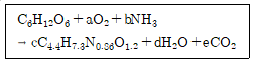
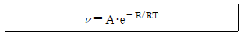
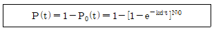
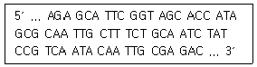
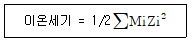

바이오화학제품제조기사 (2018-04-28 기출문제)
1과목: 미생물공학
1. 회분식 생장곡선 상의 지연기에 대한 설명으로 틀린 것은?
- 지연기는 접종 직후의 시기로서 세포들이 새로운 환경에 적응하는 기간이다.
- 배지의 탄소원의 수에 상관없이 한 개의 지연기가 관찰된다.
- 접종균이 얼마나 오랫동안 회분식으로 배양되었는가는 지연기의 길이에 큰 영향을 미친다.
- 지연기를 최소화하기 위해서는 접종 전에 세포들을 생장 배지에 적응시키는 것이 유리하다.
(정답률: 75%)

2. 동결보존법으로 미생물을 보존하고자 할 때 사용되지 않는 동해방지제(cryoprotectant)는?
- 염화나트륨
- 글리세롤
- 설탕
- 디메틸설폭사이드
(정답률: 69%)
3. 식품, 제약 및 화장품에 주로 이용되고 있는 구연산의 대표적인 생산 균주가 아닌 것은?
- 대장균
- 페니실리움 (Penicillium) 속 곰팡이
- 아스퍼질러스 (Aspergillus) 속 곰팡이
- 칸디다 (Candida) 속 효모
(정답률: 73%)
4. 아미노산의 상업적 생산 균주가 아닌 것은?
- 브레비박테리움 (Brevibacterium)
- 코리네박테리움 (Corynebacterium)
- 메틸로모나스 (Methylomonas)
- 마이크로박테리움 (Microbacterium)
(정답률: 70%)
5. 비성장속도 (specific growth rate)가 미생물 A는 0.15 hr-1, 미생물 B는 0.30 hr-1이다. 이 두 미생물의 배가시간(doubling)의 차이는 얼마인가?
- 0.15 hr
- 2.31 hr
- 3.44 hr
- 4.62 hr
(정답률: 73%)
6. 미생물은 대수기에서 대수 증식을 한다. 대수 증식기 초기 균수가 103 cell에서 배양 후 109 cell 로 증가하였다면 이 균은 약 몇 회 분열하였는가? (단, log 2 = 0.301 이다.)
- 5
- 10
- 15
- 20
(정답률: 56%)
7. 페니실린 발효에 대한 설명 중 틀린 것은?
- Corn steep liquor는 질소원으로 이용되는데 다른 질소원에 비해 높은 페니실린 생산효율을 얻을 수 있다.
- 페니실린 측쇄의 전구체는 자체적으로 생산되어 발효 배지에 첨가할 필요가 없다.
- 페니실린은 비성장 관련 생산성의 특성을 가진 2차 대사산물이다.
- 배양액의 높은 점도는 페니실린 발효 과정 중에 공급되는 산소의 전달을 방해한다.
(정답률: 81%)
8. 전분 가수분해 과정에서 맨 끝 비환원 말단으로 부터 glucose 단위체를 떨어뜨리는 작용을 하고 α-1,6 글리코시딕 결합에도 작용을 하는 효소는?
- α-Amylase
- β-Amylase
- Pullulanase
- Glucoamylase
(정답률: 68%)
9. 연속배양(chemostat)의 장점에 대한 설명으로 옳은 것은?
- 오염의 문제가 적다.
- 미생물이 유전적으로 안정화된다.
- 이차대사산물의 생산에 적합하다.
- 생육속도가 빠른 미생물 배양에 적합하다.
(정답률: 65%)
10. 산업적 발효배지 내에 불용성 입자가 다수 포함 되어 있을 경우 살균조작에 대한 설명으로 옳은 것은?
- 살균온도를 높이고 살균시간을 줄인다.
- 살균온도를 높이고 살균시간을 늘린다.
- 살균온도를 낮추고 살균시간을 줄인다.
- 살균온도를 낮추고 살균시간을 늘린다.
(정답률: 80%)
11. 질소원으로 사용되지 않는 배지 성분은?
- Yeast extract
- Soy meal
- Sucrose
- Peptone
(정답률: 83%)
12. Tricarboxylic acid cycle (TCA) 경로를 경유하지 않고 생성되는 유기산은?
- Citric acid
- Succinic acid
- L-Malic acid
- Acetic acid
(정답률: 68%)
13. 산업적 미생물 발효에 기질로 쓰이는 sulfite waste liquor 는 어떤 산업의 부산물로 주로 얻어지는가?
- 종이 산업
- 옥수수전분 산업
- 유가공 산업
- 맥주 산업
(정답률: 73%)
14. 박테리아 세포의 세포벽과 세포막을 파쇄하는데 주로 사용할 수 있는 기기는?
- 초음파 분쇄기 (sonicator)
- French 압착기
- Bead mill
- 원심분리기
(정답률: 83%)
15. 산업용 미생물의 보존 방법 중 가장 낮은 온도로 보존하는 방법은?
- 토양배양
- 동결건조
- 액체질소에 의한 보존
- 사면배양기에 의한 보존
(정답률: 79%)
16. 미생물을 이용하여 이차대사산물인 항생물질을 생산할 때, 생산균의 외부 환경을 공학적으로 조절하는 방법으로 가장 거리가 먼 것은?
- 배지의 조성 조절
- 배양액의 점도 조절
- 미생물의 막투과성 조절
- 배지의 수소이온 농도 조절
(정답률: 66%)
17. 안티코돈 (anticodon)은 다음 중 어느 물질에 존재하는가?
- DNA
- tRNA
- cDNA
- mRNA
(정답률: 83%)
18. 이분법으로 분열하는 효모는?
- Candida tropicalis
- Rhodotorula glutinis
- Saccharomyces cerevisiae
- Schizosaccharomyces pombe
(정답률: 59%)
19. 초산 발효에 사용되는 대표적인 균주는?
- Acetobacter aceti
- Penicillium citrinum
- Lactobacillus delbrueckii
- Saccharomyces cerevisiae
(정답률: 75%)
20. Corynebacterium glutamicum 은 2,6-diaminopimelic acid 경로에 의해 lysine을 생합성한다고 한다. Lysine의 과잉 생산(overproduction)을 위하여 여러 가지 영양 요구주 (auxotroph)를 만들었다. 다음 돌연변이 균주 (mutant) 중 어느 균주가 lysine 생산성이 가장 높을 것으로 예상되는가?
- Isoleucine 요구주
- Threonine 요구주
- Homoserine 요구주
- Phenylalanine 과 tyrosine 요구주
(정답률: 71%)
2과목: 배양공학
21. 식물세포 배양의 특징이 아닌 것은?
- 부착의존성 세포
- 염료인 시코닌 생산
- 세포가 aggregate 되는 현상
- 비분화된 세포로부터 식물 전체를 재생시키는 능력 보유
(정답률: 72%)
22. 미생물 자체를 반투성 막의 담체로 직접 피복하여 고정화하는 방법으로 미생물 자체와 결합반응을 일으키지 않는 고정화 방법은?
- 흡착 고정화법
- 공유 고정화법
- 가교 고정화법
- 포괄 고정화법
(정답률: 59%)
23. 방향족 아미노산이 아닌 것은?
- 라이신 (lysine)
- 타이로신 (tyrosine)
- 트립토판 (tryptophan)
- 페닐알라닌 (phenylalanine)
(정답률: 85%)
24. 미생물의 회분 (batch)식 액체 발효시 가장 결핍되기 쉬운 성분은?
- 산소
- 포도당
- 질소원
- 미량원소
(정답률: 71%)
25. 해당과정 중 ATP를 소모하면서 비가역적인 반응을 촉매하는 효소는?
- aldolase
- enolase
- hexokinase
- glucose phosphate isomerase
(정답률: 81%)
26. 재조합 DNA를 대장균에서 발현시키기 위해 벡터를 사용한다. 벡터가 갖추어야할 요건이 아닌 것은?
- 숙주세포 내에서 복제될 수 있어야 한다.
- 세포 내로 쉽게 삽입될 수 있어야 한다.
- 선택표식 (selection marker)을 가지고 있어야 한다.
- 한 개의 제한효소가 여러 자리를 절단할 수 있어야 한다.
(정답률: 85%)
27. 미생물 발효에 사용되는 세포 배양기(bioreactor)는 운전방식에 따라 회분식, 유가식, 연속식 배양기 등으로 나눈다. 다음 설명 중 틀린 것은?
- 회분식은 다른 공정에 비하여 오염의 위험도가 낮아 대부분의 발효에서 많이 이용되고 있다.
- 연속식은 생산성이 높지만 장치비가 많이 요구되고, 오염의 위험성이 있다.
- 생성물의 농도를 올리는 방법으로 유가식 방법이 많이 사용된다.
- 연속식은 세포 증식이 균일한 상태에서 배양되므로 재조합 균주의 배양에 알맞다.
(정답률: 74%)
28. 다음 중 원핵세포에 해당하는 것은?
- 효모
- 곰팡이
- 세균
- 식물
(정답률: 83%)
29. 다음 중 정상적인 대장균 세포내 수분을 제거한 건조 세포에서 조성 (wt%)이 가장 큰 것은?
- DNA
- Protein
- Lipid
- RNA
(정답률: 83%)
30. 세포질량농도를 측정하는 직접법으로 부적절한 방법은?
- RNA 측정법
- 건조중량 (dry cell weight) 측정법
- Optical density (absorbance) 측정법
- 충전세포부피 (packed cell volume) 측정법
(정답률: 80%)
31. 살균하는 과정에서 배지 성분들 사이의 화학 반응을 방지하기 위하여 서로 분리해서 살균하는 것이 바람직한 배지 성분들로 짝지어진 것은?
- 인산(PO4)과 암모늄
- 포도당(glucose)과 아미노산
- 아미노산(amino acids)와 암모늄
- 효모 엑기스(yeast extract)와 아미노산
(정답률: 72%)
32. 다음 중 세포수의 측정과 가장 관련이 없는 것은?
- 헤모사이토미터
- Petroff-Hausser슬라이드
- Coulter 측정기
- 점도 측정기
(정답률: 81%)
33. 배지에 이용되는 미량원소가 아닌 것은?
- S
- Fe
- Mn
- Zn
(정답률: 77%)
34. 용존산소농도 또는 산소분압이 해당과정(glycolysis) 속도를 조절하는 경우를 무엇이라고 하는가?
- 틴들 효과
- 페트리 효과
- 파스퇴르 효과
- 도플러 효과
(정답률: 73%)
35. 세포가 새로운 환경에 적응하는 기간으로 세포에서 새로운 구성 성분의 합성이 이루어지는 시기는?
- 유도기
- 대수기
- 정체기
- 사멸기
(정답률: 80%)
36. 분열시 모든 세포가 40 개의 플라스미드를 갖고 있는 경우에 플라스미드 불포함 세포 발생 확률은?
- 9.55×10–7
- 1.82×10–2
- 3.64×10–2
- 9.09×10–3
(정답률: 59%)
37. 다음 중 유전자 재조합 미생물의 발효에서 플라스미드의 분배적 불안정성을 극복하기 위해 플라미드에 첨가할 수 있는 유전자가 아닌 것은?
- Pin sequence
- Par sequence
- Par B sequence
- Cer sequence
(정답률: 63%)
38. 미생물은 세포막을 통해 세포 내부로 필요한 영양분들을 선택적으로 투과시킨다. 투과되는 물질이 세포막에 존재하는 특정한 단백질 (운반분자)의 도움으로 에너지를 소비하지 않으면서도 투과되는 물질의 농도 구배에 따라 쉽게 세포내로 이동되는 투과조절 (permeability control) 기작을 지칭하는 용어는?
- 단순 확산 (Passive diffusion)
- 촉진 확산 (Facilitated diffusion)
- 능동 수송 (Active transport)
- 집단 전이 (Group translocation)
(정답률: 80%)
39. 배양부피가 100 L이고 최종세포농도가 30 g/L 일 때, 발효 배지로 공급해야 하는 (NH4)2SO4의 양은 얼마인가? (단, 세포의 12%가 질소이고, (NH4)2SO4가 유일한 질소원이다.)
- 697 g
- 1197 g
- 1697 g
- 2197 g
(정답률: 59%)
40. 한 화합물을 산화시킬 때 산소로 전달되는 전자를 가용전자라 한다. CH3OH 와 같은 화학식을 갖는 기질의 가용전자수는 몇 개인가?
- 4
- 6
- 8
- 10
(정답률: 63%)
3과목: 생물반응공학
41. 발효조의 운전에 관한 설명으로 틀린 것은?
- 이차대사산물을 생산하는 경우 초기에 많은 영양분을 공급하여 균체를 성장시키고 후기에는 포도당의 농도가 낮아지고 균체의 증식율이 낮아지기 때문에 chemostat 운전이 적절하다.
- 기질이 세포의 성장에 해로울 때는 기질을 점차적으로 공급하여 기질저해 현상을 줄일 수 있으므로 유가배양 방식이 유리하다.
- 세포 자체나 세포내 대사산물의 생산을 목표로 하는 경우 연속식 조업에서 희석율이 높아지면 생산성이 높아진다.
- 재순환 연속 반응기에서는 분리 장치를 이용하여 균체의 일부를 재순환하므로 희석율을 크게 하여도 wash out이 일어나지 않을 수 있다.
(정답률: 53%)
42. 온도, 농도 등의 생물공학 관련 인자에 대한 설명 중 틀린 것은?
- 온도는 세포의 기능에 영향을 미치는 중요한 인자이다.
- 미생물은 최적생장 온도에 따라 저온성 미생물, 중온성 미생물, 호열성 미생물로 나뉜다.
- 수소이온농도(pH)는 효소 활성에 영향을 미침으로써 미생물의 생장 속도에 영향을 미친다.
- 산소는 물에 잘 녹기 때문에 미생물 발효에 있어 제한기질이 될 수 없다.
(정답률: 86%)
43. 어느 특정 미생물에 대한 실험 측정 결과 기질탄소 (포도당 내 포함된 탄소)의 2/3(wt/wt)가 다음 식과 같이 바이오매스 (biomass)로 전환 하였다고 가정하였을 때 다음 반응의 양론 계수로 옳은 것은?

- a=1.473, b=0.782, c=0.909, d=3.854, e=2
- a=1.473, b=0.782, c=0.609, d=3.854, e=2
- a=1.473, b=0.682, c=0.909, d=2.854, e=2
- a=1.573, b=0.782, c=0.909, d=2.854, e=2
(정답률: 68%)
44. 균형성장(balanced growth)기에 있는 미생물에 대한 설명으로 틀린 것은?
- 생체 조성이 일정하다.
- 생체구성물질의 합성속도는 미생물의 비성장속도(specific growth rate)에 비례한다.
- 생체구성 물질의 양이 일정하다.
- 탄소원 소모속도와 질소원 소모속도 사이에는 비례 관계가 존재한다.
(정답률: 53%)
45. 초기 액상부피가 1 L인 생물반응기에 고농도의 포도당을 시간 당 0.5 L로 주입하는 유가식 배양을 통해 2시간후에 50 g의 세포를 얻었다. 초기 세포농도를 무시할 만큼 낮다고 가정한다면, 이때 반응기에서의 세포의 농도는 몇 g/L인가?
- 100
- 50
- 25
- 10
(정답률: 62%)
46. 동물세포 생물 반응기의 설계에 관한 내용으로 옳은 것은?
- 동물세포는 공기 공급 시 강한 교반이 이루어지도록 설계한다.
- 동물세포 생물 반응기의 설계에서 지지표면대 부피의 비가 어느 경우에도 가장 중요한 설계인자이다.
- 공기의 공급이 이루어지지 않도록 설계한다.
- CO2가 보강된 공기의 공급이 이루어지도록 설계되어야 한다.
(정답률: 71%)
47. 가변체적 유가식 배양 시 준정상상태 (quasi-steady state)에서 비성장속도에 대한 설명과 운전 방식에 대한 설명으로 옳은 것은?
- 희석속도와 같으며 시간이 경과함에 따라 감소하도록 운전하는 것이 일반적이다.
- 희석속도와 같으며 일정한 값을 갖도록 운전하는 것이 일반적이다.
- 희석속도보다 느리며 일정한 값을 갖도록 운전하는 것이 일반적이다.
- 희석속도보다 느리며 시간이 경과함에 따라 증가하도록 운전하는 것이 일반적이다.
(정답률: 47%)
48. 다음 중 산소공급(aeration)이 어려운 경우는?
- 빵효모 발효
- 조류(algae) 배양
- Newtonian 액체
- 점액질의 곰팡이 발효
(정답률: 69%)
49. 알로스테릭 (allosteric) 효소의 속도식이 Michaelis-menten 속도식과 같아지게 되는 협동계수 n의 값은?
- 0
- 1
- -1
- 2
(정답률: 76%)
50. 고정화 세포계에서의 생물반응기에 대한 설명으로 옳은 것은?
- 동물세포의 경우 세포는 필터와 같이 기계적 장치에 의해 반응조 안에 머물게 하는 관류 (perfusion) 방식으로 운전된다.
- 고정화 동물세포 배양기는 유동층(fluidized-bed) 형태로 운전되는데 아주 낮은 재순환을 필요로 한다.
- 고정화 세포를 이용한 폐기물처리 시스템에서는 아주 낮은 재순환이 필수적인데, 이때 계는 연속식 반응기에 가깝다.
- 지지담체의 강도가 약할 경우 충전관 (packed-column) 반응기 같이 높은 수력학적 전단응력을 가지는 반응기가 선호된다.
(정답률: 53%)
51. 세포 고정화 방법 중 수동적 고정화 방법은?
- 고분자의 젤화
- 고분자의 침전
- 이온교환 젤화
- 생물막의 이용
(정답률: 68%)
52. 연속교반 흐름 반응기를 이용하여 발효 공정을 수행하던 중 거품이 많이 발생하는 문제가 발생 되었다. 이에 대한 설명으로 틀린 것은?
- 거품 제거를 위해 head space가 필요하다.
- 거품 때문에 발효기의 최종 생산성이 제한 될 수 있다.
- 화학적 계면활성제의 첨가로 거품을 줄일 수 없다.
- 기계적 거품제거기로 거품을 줄일 수 있다.
(정답률: 81%)
53. 세포의 비성장 속도를 나타내는 단순한 식인 모노드식 (Monod equation)에 대한 설명으로 옳지 않은 것은?
- 제한 기질 이외 다른 영양소들의 농도 변화는 비성장 속도에 영향을 미치지 않는다고가정한다.
- 성장 제한 기질이 최소 둘 이상이다.
- 비성장 속도가 최대가 된 후 기질을 그 이상 첨가해도 비성장속도는 증가하지 않는다.
- 비성장 속도는 제한 기질의 농도에 좌우된다.
(정답률: 70%)
54. 산업용 발효 배지의 탄소원으로 잘 쓰이지 않는 것은?
- 당밀
- 타피오카
- whey
- 요소
(정답률: 77%)
55. 다음 고정화 효소계에서의 유효인자 (effectiveness factor)에 대한 설명으로 틀린 것은?
- 효소가 고정화된 입자의 크기가 클수록 유효인자도 커진다.
- 유효인자가 클수록 물질 전달 속도는 증가한다.
- 영차 (zero order) 반응에 대해서 유효인자는 1 이다.
- 확산저항이 있을 때의 반응속도에 대한 확산저항이 없을 때의 반응속도의 비이다.
(정답률: 45%)
56. 효소의 coenzyme에 대한 설명으로 옳은 것은?
- 효소 반응은 항상 coenzyme을 필요로 한다.
- 비타민 등은종종 coenzyme으로 사용된다.
- 모든 coenzyme은 동일한 방식으로 반응에 참여한다.
- 동일한 coenzyme을 필요로 할 경우 효소가 달라도 동일한 반응을 수행한다.
(정답률: 72%)
57. 어떤 효소의 활성화 에너지는 11 kcal/g·mol 이다. 온도를 20 ℃에서 30 ℃로 높이면 반응속도는 어떻게 되는가? (단, 온도의존성은 아레니우스식을 따른다고 가정한다.)

- 1.87 배 증가
- 1.87 배 감소
- 1.16 배 증가
- 1.16 배 감소
(정답률: 62%)
58. 균일한 집단에서 멸균을 통해 반응기를 살균한 경우 오염되어 실패할 확률은 다음과 같다. 여기서 P(t)는 오염에 의한 배양 실패 확률, P0(t)는 멸균 성공 확률, kd는 비사멸속도, t는 살균시간, NO는 반응기내에서의 오염균 개체수라고 할 때, 10,000 리터 용기에서 오염균에 대한 배양 실패 확률은 얼마인가? (단, kd·t는 20이고, 리터당 세포수는 105이다.)

- 0.1
- 0.682
- 0.873
- 1
(정답률: 41%)
59. 미생물의 회분식 배양에서 배양 초기의 성장 지연기간 (lag phase)을 줄이기 위한 방법이 아닌 것은?
- 종균 배양액과 본 배양액의 배지 조성이 비슷하도록 한다.
- 본 배양액에 접종하는 종 배양액의 부피를 늘린다.
- 본 배양의 초기 온도를 높인다.
- 종 배양 중 지수성장단계(exponential growth phase)에 있는 배양액을 본 배양으로 옮긴다.
(정답률: 65%)
60. Michaelis-Menten 속도식의 계수를 구하는데 이용되는 Eadie-Hofstee 도표의 x축과 y축은? (단, V는 효소반응의 산물생성속도이며 [S]는 기질의 농도이다.)
- x 축은 1/[S], y 축은 1/V 이다.
- x 축은 V, y 축은 V/[S] 이다.
- x 축은 [S], y 축은 [S]/V 이다.
- x 축은 V/[S], y 축은 V 이다.
(정답률: 51%)
4과목: 생물분리공학
61. 다음 분리기술 중 조업압력이 가장 높은 것은?
- 역삼투 (RO)
- 한외여과 (UF)
- 미세여과 (MF)
- 나노여과 (Nano-Filtration)
(정답률: 72%)
62. 결정화 용해도-온도 곡선인 Miers diagram에서 자발적인 물질의 침전이 이루어지는 영역은?
- Labile 영역
- Metastable 영역
- Intermediate 영역
- Undersaturation 영역
(정답률: 54%)
63. 원심분리 공정에서 침강 속도를 옳게 설명한 것은?
- 점도에 비례한다.
- 원심력에 비례한다.
- 입자 직경 제곱근에 반비례한다.
- 입자 직경 자승에 반비례한다.
(정답률: 84%)
64. 다음 회수 정제 공정 중 구연산의 회수 정제 공정에서 사용되지 않는 것은?
- 균사체 여과
- Ca(OH)2 첨가
- 활성탄을 이용한 탈색
- SP-Sephadex C-25 흡착
(정답률: 63%)
65. 증류탑의 단효율이 60% 이고, McCabe-Thidele 법으로 구한 이론 단수가 12일 때 설계하여야 할 단수는 ?
- 7단
- 20단
- 25단
- 30단
(정답률: 71%)
66. 다음 중 화학적 방법에 의한 세포 파쇄 방법이 아닌 것은?
- 삼투압 충격
- 알칼리 처리
- 계면활성제 처리
- 초음파 처리
(정답률: 79%)
67. 보울 원심분리기에서 발효액 공급속도가 50L/min이고, 1000 rpm에서 90%의 균체가 회수 되었다. 200 L/min의 발효액 공급속도에서 90%의 균체가 회수되기 위해 요구되는 운전속도는?
- 1500 rpm
- 2000 rpm
- 4000 rpm
- 6000 rpm
(정답률: 54%)
68. 분리 정제 공정의 배양물 선택 시, 고려사항이 아닌 것은?
- 제품의 용도
- 제품의 성질
- 배양물의 탁도
- 생산물의 축적 농도
(정답률: 63%)
69. 덱스트란과 함께 액/액 2상계 (two phase system) 시스템을 형성하여 단백질 분리에 사용되는 물질은?
- 에탄올
- (NH4)2SO4
- 아세토니트릴
- 폴리에틸렌글라이콜(PEG)
(정답률: 77%)
70. 등전 침전 (isoelectric precipitation)에 대한 설명으로 틀린 것은?
- 높은 표면 소수성 즉, 비극성 표면을 나타내는 단백질에는 효과적이지 않다.
- 단백질이 아무 전하도 띠지 않는 pH인 등전점에서의 단백질 침전이다.
- 가격은 저렴하지만 낮은 pH에서는 단백질이 변성될 수 있다.
- 단백질의 등전점은 pI = (pK1 + pK2) / 2로 정의된다.
(정답률: 63%)
71. CO2를 사용하며, 식품공업에서 활발히 사용되는 환경 친화적인 분리 기술은?
- 막분리
- 액-액 추출
- 초임계 추출
- 이온교환 크로마토그래피 활용
(정답률: 82%)
72. 이상적인 액체 추출제의 구비 조건으로 옳은 것은?
- 독성이 있다.
- 가격이 비싸다.
- 높은 분배계수를 가진다.
- 발효액과의 상호 용해성이 높다.
(정답률: 79%)
73. 활성화에너지가 20000 cal/mol이고 속도상수가 3×1012min-1일 때, 27℃에서 100분간의 건조에 의한 효소의 활성 잔존율은 약 몇 % 인가? (단, 기체상수는 1.99 cal/mol·K 이다.)
- 43
- 57
- 93
- 97
(정답률: 31%)
74. 이온교환수지의 담체(matrix)로 합성고분자 물질이나 천연고분자물질을 사용할 때 수지 제조에 사용되고 있는 가교제(crosslinking agent)의 영향으로 옳지 않은 것은?
- Styrene계 고분자 수지의 가교제로 divinylbenzene을 사용할 수 있다.
- 가교제의 함량이 크면 팽창 및 수축도가 증가한다.
- 가교제의 함량이 크면 수지의 기계적 강도가 증가한다.
- 가교제의 함량이 크면 이온교환 속도가 감소할 수 있다.
(정답률: 50%)
75. 효소 생산균주 분리를 위한 액체 집적 배양법에 대한 설명으로 가장 옳은 것은?
- 선택배지에 효소 생산균의 생육을 촉진해주는 효소 기질을 첨가해 준다.
- 다른 균에 비해 소수균을 증가시키기 위해 실시한다.
- 혼합배양계에 범용의 미생물 생육물질을 첨가해 준다.
- 혼합배양계에 특정의 생육저해제를 첨가해 준다.
(정답률: 58%)
76. 생물 물질의 특성에 대한 설명 중 틀린 것은?
- 생산물은 열에 강하다.
- 분리해야 될 생산물이 다양하다.
- 생산물은 수용성 배지에서 묽은 농도로 존재한다.
- 생산물과 비슷한 물리·화학적 특성을 갖는 불순물이 포함되어 있다.
(정답률: 76%)
77. 효모 세포벽의 투과도를 향상시키기 위해 가장 많이 사용되는 유기용매는?
- 헥산 (hexane)
- 톨루엔 (toluene)
- 에탄올 (ethanol)
- 벤젠 (benzene)
(정답률: 66%)
78. 세포배양액 또는 발효액으로부터 사용한 세포를 회수 또는 제거하기 위하여 일반적으로 사용하는 방법이 아닌 것은?
- 응집
- 원심분리
- 용매 추출
- 회전진공여과기
(정답률: 55%)
79. α-아미노산의 α-탄소에 일반적으로 결합되어 있는 기능기가 아닌 것은?
- -NH2
- -H
- -SH
- -COOH
(정답률: 80%)
80. 다음 생물기초물질 중 물에 녹지 않는 소수성을 띤 생체물질로서 세포막과 같은 비수성 생체계 에서 특히 많이 검출되는 것은?
- 지질(lipids)
- 단백질(proteins)
- 핵산(nucleic acids)
- 탄수화물(carbohydrates)
(정답률: 82%)
5과목: 생물공학개론
81. pH 4.47인 0.3 M 초산완충용액 1 리터를 2 M 초산과 2.5 M KOH로 만들려고 한다. 필요한 2.5 M KOH의 양은 몇 mL인가? (단, 초산의 pKa = 4.77 이다.)
- 20 mL
- 40 mL
- 80 mL
- 120 mL
(정답률: 63%)
82. 의약품 제조관리와 품질관리를 위한 기준서 중 제조관리 기준서에 반드시 포함되어야 하는 사항이 아닌 것은?
- 자재 관리에 관한 사항
- 완제품 관리에 관한 사항
- 원료약품 관리에 관한 사항
- 작업소의 청정도 관리에 관한 사항
(정답률: 74%)
83. 다음에 주어진 DNA를 주형(template)으로 이용하여 중합효소연쇄반응(PCR)을 수행하여 DNA를 증폭시키려고 한다. 각각 18 bp인 forward primer와 reverse primer를 디자인 할 때 reverse primer로 가장 적절한 것은?

- 5′ AGA GCA TTC GGT AGC ACC 3′
- 5′ TCT CGT AAG CCA TCG TGG 3′
- 5′ CAG AGC GTT AAC ATA ACT 3′
- 5′ GTC TCG CAA TTG TAT TGA 3′
(정답률: 67%)
84. 미생물 정련 (bacteria leaching) 중 황을 황산으로 산화시키는 황세균(Thiobacillus)은 극한 환경에 존재하는 미생물이다. 고온과 강산성의 환경에서 생장하는 황세균의 분리원으로 가능성이 높은 곳은?
- 염전
- 모래
- 부패된 통조림
- 심해 해저분화구 열수부
(정답률: 80%)
85. 어떤 시료에서 목적으로 하는 미생물을 혼재하고 있는 다른 미생물보다 빨리 다량으로 얻은 후에 순수 분리를 한다. 목적하는 미생물에 적합한 배지에 시료의 소량을 넣고, 적온을 유지하여 목적하는 미생물의 생장 번식을 왕성하게 하고 잡균을 억제하는 배양 방법은?
- 도태배양
- 순수배양
- 액체배양
- 계대배양
(정답률: 69%)
86. 다음 코돈 중 특정 아미노산을 나타내는 코돈은?
- UAA
- UAG
- UUU
- UGA
(정답률: 76%)
87. 어떤 희박용액의 이온세기(ionic strength)는 다음 식에 의해 근사적으로 구할 수 있다. 0.01 M Fe2(SO4)3 용액의 이온세기는? (단, Mi는 이온의 몰농도, Zi는 이온의 하전가(charge) 이다.)

- 0.075
- 0.15
- 0.30
- 0.60
(정답률: 55%)
88. 유전자 컨스트럭트에 포함되지 않는 부분은?
- 프로모터
- 암호화 서열
- 종결점
- 복제 원점
(정답률: 64%)
89. 의약품 제조 및 품질관리 기준에 의한 용어의 정의로 옳지 않은 것은?
- “제조”라 함은 의약품을 생산하기 위하여 행하여지는 모든 작업을 말하며, 포장 및 표시 작업도 이에 포함된다.
- “수율”이라 함은 이론 생산량에 대한 실생산량의 백분율을 말한다.
- “제조단위” 또는 “로트”라 함은 동일한 제조공정 하에서 균질성을 갖도록 제조된 의약품의 일정한 분량을 말한다.
- “기준일탈”이라 함은 제조 또는 품질관리 과정에서 미리 정해진 기준을 벗어난 이루어진 행위를 말한다.
(정답률: 65%)
90. 퓨린계 염기가 피리미딘계 염기로 또는 피리미딘계 염기가 퓨린계 염기로 바뀌는 돌연변이는 무엇인가?
- 염기전위(transition)
- 염기역위(reversion)
- 염기구조이동
- 염기변위(transversion)
(정답률: 72%)
91. 승화 현상을 이용하는 건조 방법은?
- 기류수송식 건조법
- 동결 건조법
- 분무 건조법
- 회전통 건조법
(정답률: 81%)
92. 중력에 의해 액체에서 고체를 침강시키는데 작용하는 힘은 중력, 항력, 부력이다. 입자가 종단침전속도에 도달하면 입자에 작용하는 힘이 어떻게 평형을 이루어 전체 힘이 0이 되는가?
- 중력 –항력 –부력 = 0
- 항력 –중력 –부력 = 0
- 부력 –항력 –중력 = 0
- 중력 + 항력 + 부력 = 0
(정답률: 81%)
93. 염석 (salting-out)은 염을 첨가하여 단백질을 포함하는 용액의 이온 세기를 증가시킴으로써 이루어지는데 다음 화합물 중 이온의 세기가 가장 강해 같은 농도에서 가장 단백질 침전을 높게 일으킬 수 있는 화합물은 무엇인가?
- Na2SO4
- NaCl
- NaNO3
- NH4Cl
(정답률: 71%)
94. DNA의 특정 부위를 절단하는 효소는?
- 결합효소
- 제한효소
- 전달효소
- 이성화효소
(정답률: 88%)
95. 여러 분해효소를 포함하고 있으며 영양소와 세포 내로 들어온 외부물질을 분해하는 작용을 하는 세포내 소기관은?
- 미토콘드리아
- 리보좀
- 리소좀
- 소포체
(정답률: 77%)
96. 다음 중 통기 교반에 관계되는 발효조의 기계 요소와 거리가 먼 것은?
- 임펠러 (impeller)
- 방해판 (baffle)
- 공기분산 유입관
- Glass wool
(정답률: 81%)
97. 4% KOH 용액으로 20% KOH용액 500 Kg을 얻었다. 수분 증발량은 몇 Kg인가?
- 1800 Kg
- 2000 Kg
- 2300 Kg
- 2500 Kg
(정답률: 60%)
98. DNA 재조합 기술로 생산된 단백질과 그 용도가 틀리게 연결된 것은?
- 인슐린 : 당뇨병 치료
- 인터루킨-2 : 빈혈 치료
- 인간성장호르몬 : 성장 결함 치료
- 돼지성장호르몬 : 돼지의 성장을 촉진
(정답률: 81%)
99. 세포 내 에너지 생성 반응에 대한 설명으로 틀린 것은?
- 생체 내의 에너지는 주로 ATP에 의해 저장 또는 전달된다.
- 활성화된 ATP는 Mg2+와 복합체를 이룬다.
- ATP가 가수분해 될 때, 표준자유에너지 변화는 7.3 kcal/mol 이다.
- 일반적으로 세포 내에서 ATP의 농도가 ADP의 농도보다 훨씬 낮다.
(정답률: 75%)
100. 번역 후 수정이 필요 없는 경우 가장 널리 사용되는 초기 숙주는?
- Bacillus subtilis
- Escherichia coli
- Trichoderma reesei
- Saccharomyces cerevisiae
(정답률: 76%)